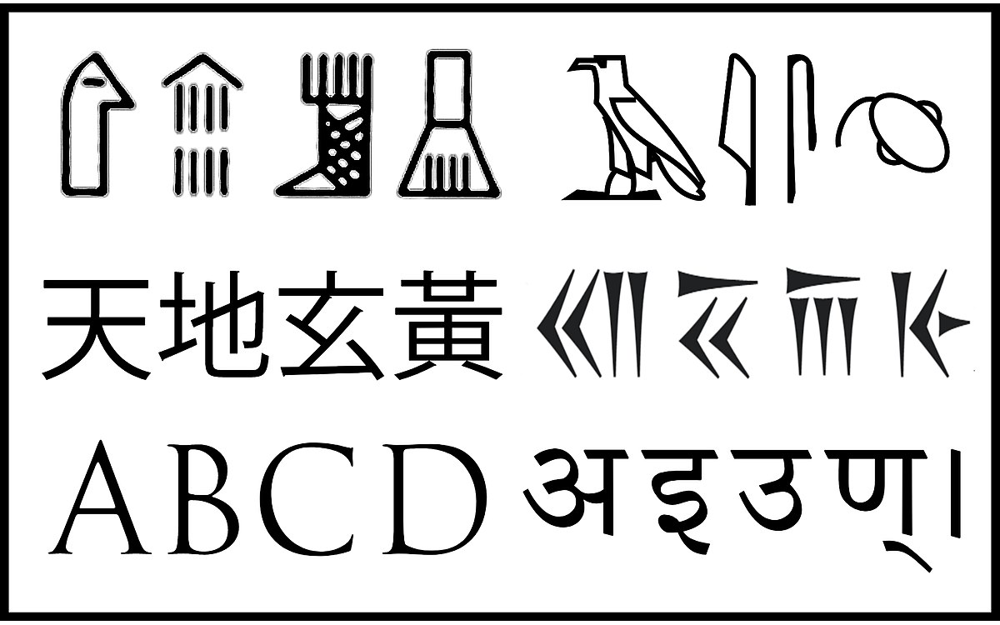

The origin of ancient writing
- The Sumerians, an ancient people of the Middle East, had a story explaining the invention of writing more than 5,000 years ago. It seems a messenger of the King of Uruk arrived at the court of a distant ruler so exhausted that he was unable to deliver the oracle message. So the king set down the words of his next messages on a clay tablet. A charming story, whose retelling at a recent symposium at the University of Pennsylvania amused scholar. They smiled at the absurdity of a letter which the recipient would not have been able to read.
- They also doubted that the earliest writing was a direct rendering of speech. Writing more likely began as a separate, symbolic system of communication and only later merged with spoken language.
- Yet in the story the Sumerians, who lived in Mesopotamia, in what is now southern Iraq, seemed to understand writing's transforming function. As Dr. Holly Pittman, director of the University's Center for Ancient Studies, observed, writing 'arose out of the need to store and transmit information ...over time and space'.
- In exchanging interpretations and information, the scholars acknowledged that they still had no fully satisfying answers to the questions of how and why writing developed. Many favored an explanation of writing's origins in the visual arts, pictures becoming increasingly abstract and eventually representing spoken words. Their views clashed with a widely held theory among archaeologists that writing developed from the pieces of clay that Sumerian accountants used as tokens to keep track of goods.
- Archaeologists generally concede that they have no definitive answer to the question of whether writing was invented only once, or arose independently in several places, such as Egypt, the Indus Valley, China, Mexico and Central America. The preponderance of archaeological data shows that the urbanizing Sumerians were the first to develop writing, in 3,200 or 3,300 BC. These are the dates for many clay tablets in an early form of cuneiform, a script written by pressing the end of a sharpened stick into wet clay, found at the site of the ancient city of Uruk. The baked clay tablets bore such images as pictorial symbols of the names of people, places and things connected with government and commerce. The Sumerian script gradually evolved from the pictorial to the abstract, but did not at first represent recorded spoken language.
- Peter Damerow, a specialist in Sumerian cuneiform at the Max Planck Institute for the History of Science in Berlin, said, 'It is likely that there were mutual influences of writing systems around the world. However, their great variety now shows that the development of writing, once initiated, attains a considerable degree of independence and flexibility to adapt to specific characteristics of the sounds of the language to be represented. Not that he accepts the conventional view that writing started as a representation of words by pictures. New studies of early Sumerian writing, he said, challenge this interpretation. The structures of this earliest writing did not, for example, match the structure of spoken language, dealing mainly in lists and categories rather than in sentences and narrative.
- For at least two decades, Dr. Denise Schmandt-Besserat, a University of Texas archaeologist, has argued that the first writing grew directly out of a system practised by Sumerian accountants. They used clay tokens, each one shaped to represent a jar of oil, a container of grain or a particular kind of livestock. These tokens were sealed inside clay spheres, and then the number and type of tokens inside was recorded on the outside using impressions resembling the tokens. Eventually, the token impressions were replaced with inscribed signs, and writing had been invented.
- Though Dr. Schmandt-Besserat has won much support, some linguists question her thesis, and others, like Dr. Pittman, think it too narrow. They emphasize that pictorial representation and writing evolved together. 'There's no question that the token system is a forerunner of writing', Dr. Pittman said, 'but I have an argument with her evidence for a link between tokens and signs, and she doesn't open up the process to include picture making.
- Schmandt-Besserat vigorously defended her ideas. 'My colleagues say that pictures were the beginning of writing' she said, 'but show me a single picture that becomes a sign in writing. They say that designs on pottery were the beginning of writing, but show me a single sign of writing you can trace back to a pot - it doesn't exist'. In its first 500 years, she asserted, cuneiform writing was used almost solely for recording economic information, and after that its uses multiplied and broadened.
- Yet other scholars have advanced different ideas. Dr. Piotr Michalowski, Professor of Near East Civilizations at the University of Michigan, said that the proto- writing of Sumerian Uruk was 'so radically different as to be a complete break with the past'. It no doubt served, he said, to store and communicate information, but also became a new instrument of power. Some scholars noted that the origins of writing may not always have been in economics. In Egypt, most early writing is high on monuments or deep in tombs. In this case, said Dr. Pascal Vernus from a university in Paris, early writing was less administrative than sacred. It seems that the only certainty in this field is that many questions remain to be answered.
Questions 1-4
Choose the correct letter A, B, c or D
1. The researchers at the symposium regarded the story of the King of Uruk as ridiculous because
A writing probably developed independently of speech.
B clay tablets had not been invented at that time.
C the distant ruler would have spoken another language.
D evidence of writing has been discovered from an earlier period.
2. According to the writer, the story of the King of Uruk
A is a probable explanation of the origins of writing.
B proves that early writing had a different function to writing today.
C provides an example of symbolic writing.
D shows some awareness amongst Sumerians of the purpose of writing
3. There was disagreement among the researchers at the symposium about
A the area where writing began.
B the nature of early writing materials.
C the way writing began
D the meaning of certain abstract images.
4. The opponents of the theory that writing developed from tokens believe that it
A grew out of accountancy.
B evolved from pictures.
C was initially intended as decoration.
D was unlikely to have been connected with commerce.
Questions 5-10
Look at the following statements (Questions 5-10) and the list of people below.
Match each statement with the correct person, A-E.
Write the correct letter, A-E, in boxes 5-10 on your answer sheet.
NB You may use any letter more than once.
List of people
A. Dr. Holly Pittman
B. Dr. Peter Damerow
C. Dr. Denise Schmandt-Besserat
D. Dr. Piotr Michalowski
E. Dr. Pascal Vernus
5 There is no proof that early writing is connected to decorated household objects
6 As writing developed, it came to represent speech.
7 Sumerian writing developed into a means of political control.
8 Early writing did not represent the grammatical features of speech.
9 There is no convincing proof that tokens and signs are connected.
10 The uses of cuneiform writing were narrow at first, and later widened.
Questions 37- 40
Complete the summary wing the list of words, A-N, below.
Write the correct letter, A-N, in boxes 37-40 on your answer sheet
The earliest form of writing
Most archaeological evidence shows that the people of 37 invented
writing in around 3,300 BC. Their script was written on 38 and was called 39 . Their script originally showed images related to political power and business, and later developed to become more 40
|
A cuneiform |
B pictorial |
c tomb walls |
|
D urban |
E legible |
F stone blocks |
|
G simple |
H Mesopotamia |
I abstract |
|
J papyrus sheets |
K decorative |
L clay tablets Uruk |
|
|
M Egypt |
|
---End of the Test---
Please Submit to view your score, solution and explanations.